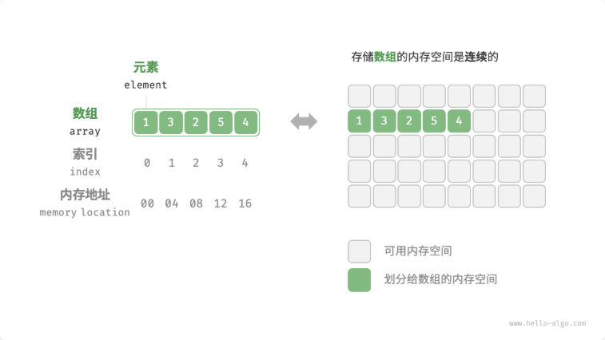
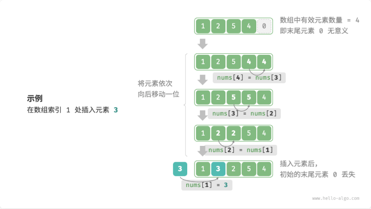
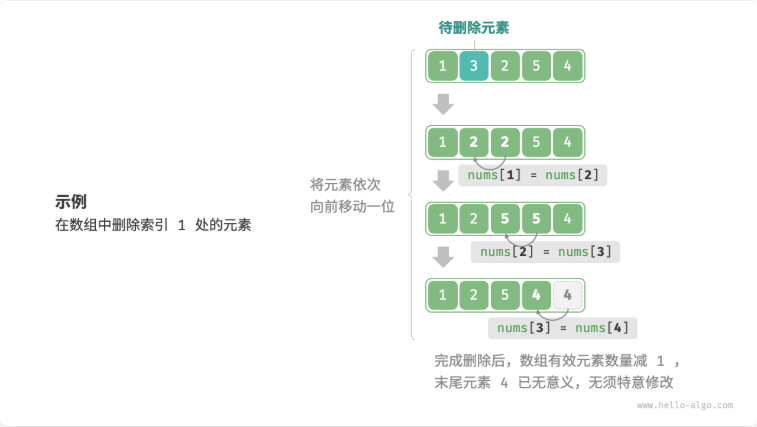

数组（array）是一种线性数据结构，其将相同类型的元素存储在连续的内存空间中。

常用操作
1. 初始化
1 | /* 初始化数组 */ |
一般有两种初始化方式：无初始值、给定初始值。在未指定初始值的情况下，大多数编程语言会将数组元素初始化为 \(0\) 。
2. 访问元素
数组元素被存储在连续的内存空间中，给定数组内存地址（首元素内存地址）和某个元素的索引，通过下图的计算就可以算出指定元素的内存地址：

数组首个元素的索引为 \(0\) ，这似乎有些反直觉，因为从 \(1\) 开始计数会更自然。但从地址计算公式的角度看，索引本质上是内存地址的偏移量。首个元素的地址偏移量是 \(0\) ，因此它的索引为 \(0\) 是合理的。
在数组中访问元素非常高效，我们可以在 \(O(1)\) 时间内随机访问数组中的任意一个元素
1 | /* 随机访问元素 */ |
3. 插入元素
在数组中间插入一个元素，需要将该元素之后的所有元素都向后移动一位，再把元素赋值给该索引：

由于数组的长度是固定的，因此插入一个元素必定会导致数组尾部元素 “丢失” 。
1 | /* 在数组的索引 index 处插入元素 num */ |
4. 删除元素
若想删除索引 \(i\) 处的元素，则需要把索引 \(i\) 之后的元素都向前移动一位：

删除元素完成后，原先末尾的元素变得 “无意义” 了，所以我们无须特意去修改它
1 | /* 删除索引 index 处的元素 */ |
5. 遍历数组
1 | /* 遍历数组 */ |
6. 查找元素
数组查找元素的操作是 “线性查找” ：
1 | /* 在数组中查找指定元素 */ |
7. 扩容数组
在复杂的系统环境中，程序难以保证数组之后的内存空间是可用的，从而无法安全地扩展数组容量。因此在大多数编程语言中，数组的长度是不可变的。
如果我们希望扩容数组，则需重新建立一个更大的数组，然后把原数组元素依次复制到新数组。这是一个 \(O(n)\) 的操作，在数组很大的情况下非常耗时。
1 | /* 扩展数组长度 */ |
数组小结
优缺点分析
优点：
- 空间效率高：数组为数据分配了连续的内存块，无须额外的结构开销，这也让访问、遍历、查找非常快
- 支持随机访问：数组允许在 \(O(1)\) 时间内访问任何元素
- 缓存局部性：当访问数组元素时，计算机不仅会加载它，还会缓存其周围的其他数据，从而借助高速缓存来提升后续操作的执行速度
缺点：
- 插入、删除效率低：时间复杂度高（\(O(n)\)），需要移动大量元素
- 长度不可变：数组在初始化后长度就固定了，扩容数组需要将所有数据复制到新数组，开销很大
- 空间浪费：如果数组分配的大小超过实际所需，那么多余的空间就被浪费了
典型应用
- 随机访问：如果我们想随机抽取一些样本，那么可以用数组存储，并生成一个随机序列，根据索引实现随机抽样。
- 排序和搜索：数组是排序和搜索算法最常用的数据结构。快速排序、归并排序、二分查找等都主要在数组上进行。
- 查找表：当需要快速查找一个元素或其对应关系时，可以使用数组作为查找表。假如我们想实现字符到 ASCII 码的映射，则可以将字符的 ASCII 码值作为索引，对应的元素存放在数组中的对应位置。
- 机器学习：神经网络中大量使用了向量、矩阵、张量之间的线性代数运算，这些数据都是以数组的形式构建的。数组是神经网络编程中最常使用的数据结构。
- 数据结构实现：数组可以用于实现栈、队列、哈希表、堆、图等数据结构。例如，图的邻接矩阵表示实际上是一个二维数组。